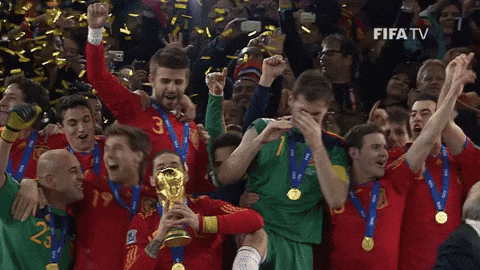

España
Selección de España: Historial Mundialista

- Título Mundial: 1 (Sudáfrica 2010), ganando la final a Países Bajos por 1-0 con gol de Andrés Iniesta.
- Mejor Posición: Campeona en 2010.
- Participaciones: 16 veces (debut en 1934), siendo una de las selecciones clásicas, ausente solo seis veces en la historia.
- Anfitrión: España organizó el Mundial en 1982.
- Historial Reciente: Tras ganar en 2010, fue eliminada en fase de grupos (2014) y octavos de final (2018, 2022).
- Mundial 2026: España aseguró su participación el 18 de noviembre de 2025 y se perfila como una de las favoritas.
- Mundial 2030: Será coanfitriona junto a Portugal y Marruecos.